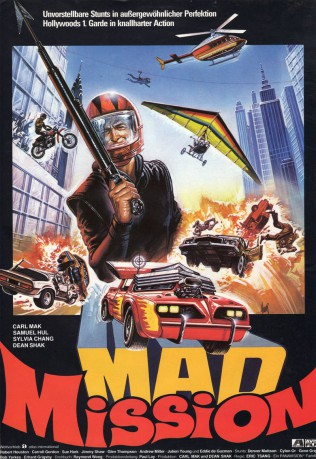

#11294 Mad Mission 1
 
 IMDB-Wertung: 6.8 / 10
IMDB-Wertung: 6.8 / 10  Metascore: 0
Metascore: 0 
King Kong ist ein gerissener Dieb und hat einen wertvollen Diamanten geraubt. Leider kann die Polizei nicht viel ausrichten und man bestellt aus Amerika einen Meisterdetektiv. Albert Au, wegen seiner Glatze auch Kodijack genannt, übernimmt den Fall und ist Garant für wilde Verfolgungsjagden, turbulente Action und alles was ein Eastern-Herz begehrt.
Jahr: 1982
Dauer: 93 Minuten
FSK: 12
Land: Hong-Kong Studio: Astro DistributionTonspuren: DD5.1 - ,
Untertitel: Deutsch, Englisch,
Auflösung: 1080p (1920x808) Größe: 6717 MB
Genre: Action, Komödie
Regisseur:  Eric Tsang
Eric Tsang
Drehbuch: Raymond Bak-Ming Wong
Soundtrack: Samuel Hui, Teddy Robin Kwan
Darsteller:
Datei: X:\HD-Eastern-Collections\Mad Mission\Mad Mission 1 (1982, FSK12, 1920x808).mkv seit 17.06.2019
Festplatte: HD Eastern+Western
 Es gibt insgesamt 7 Filme in der Gruppe 'HD-Eastern-Collections\Mad Mission'
Es gibt insgesamt 7 Filme in der Gruppe 'HD-Eastern-Collections\Mad Mission'